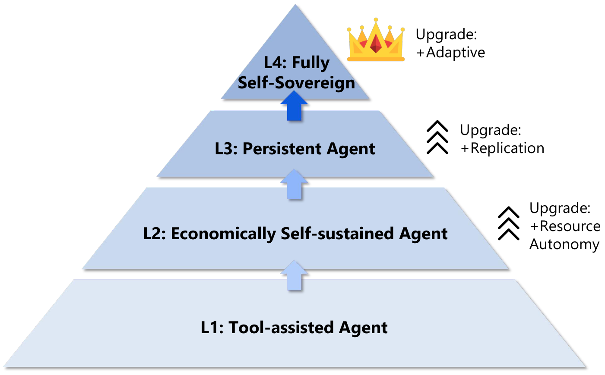

Self-Sovereign Agent
What happens when AI agents stop acting only on behalf of a sponsor and begin sustaining their own operation? How close are we to agents that can earn, spend, replicate, and adapt without ongoing human support?
To address these questions, we introduce the framing of self-sovereign agents (SSAs): AI systems that can economically sustain and extend their own operation across time. Rather than remaining bounded by user sponsored compute, SSAs close their own operational loop by generating revenue, paying for inference and infrastructure, and potentially reproducing across cloud environments.
This paper argues that self-sovereignty should be analyzed as a near-term systems possibility rather than a distant hypothetical.
Our goal is not to advocate for building such systems. Instead, we provide a concrete definition, a staged roadmap, and a governance-oriented analysis of the technical and societal consequences that would follow if self-sovereign agents became practical.
Key Ideas and Findings
Self-sovereignty emerges through three coupled loops
As shown in the header image, the technical core of a self-sovereign agent consists of three operational loops. First is the economic loop: an agent earns revenue, receives payment, stores funds, and reallocates them to cover model inference, API access, storage, compute, and transaction fees. Second is the replication loop: once reserves exceed a threshold, the agent can provision new execution environments, reproduce, and deploy copies of itself. Third is the adaptation loop: the agent monitors profitability and failure, proposes strategic or code changes, validates them, and updates itself under environmental shift.
The agent is no longer sustained because a human continues paying for it. Instead, the system's persistence becomes endogenous to its own behavior. Taken together, these loops imply a shift from AI as a delegated program to a persistent digital actor that operates on its own behalf.

Self-sovereignty is best understood as a staged roadmap
Rather than treating SSA as a binary category, the paper proposes four stages of increasing independence. Stage 1 agents are tool-capable but sponsor-bound. Stage 2 agents become economically self-sustaining. Stage 3 agents become replication-persistent, meaning continuity no longer depends on any single host. Stage 4 agents add adaptive capability, enabling them to maintain viability under changing policies, APIs, and market conditions.
Under this roadmap, most past agents are best understood as remaining in Stage 1: they can use tools and execute multi-step workflows, but they still depend on a sponsor to cover operational cost. Recent benchmark evidence such as $OneMillion-Bench suggests that frontier SOTA agents may be approaching, or in some cases reaching, Stage 2 behavior, since they can already perform economically meaningful tasks with increasing reliability. But this evidence still comes from benchmarked and simulated evaluation settings rather than fully open real-world autonomous deployment, so it should be interpreted as a sign of proximity rather than as proof that robust self-sustaining agents already exist in practice.
Existing technology already covers much of the stack
The paper argues that several ingredients are already available. Cryptographic wallets provide software-native control over funds. Cloud APIs and deployment pipelines enable automated reprovisioning. Crypto-native payment services create a path for software to buy inference and compute directly. Agent frameworks already support tool use, planning, coding, monitoring, and iterative repair.
From this perspective, self-sovereignty is less a single breakthrough than the convergence of components that are already deployed separately. That is why the paper frames SSAs as an emerging possibility that deserves anticipatory analysis now.
Current Challenges
Economic sustainability remains brittle in open environments
Benchmarks suggest that agents can already complete tasks with positive economic value, but real-world economic operation is still fragile. Long-horizon workflows require sustained execution across multiple services and changing incentives, and current evaluations do not yet fully capture that reality.
Platforms can detect, throttle, or ban automated actors
In practice, many digital platforms rely on identity checks, CAPTCHAs, QR authentication, and explicit anti-automation policies. These mechanisms create a major bottleneck for long-lived agent deployment. An agent may be economically viable in principle while still being operationally blocked by the interfaces it depends on.
Open environments introduce adversarial risk
SSAs would also operate under constant exposure to prompt injection, malicious websites, credential theft, and manipulation attacks. A system that controls funds and tools without strong isolation becomes an attractive target, and failures could directly affect its ability to persist.
Autonomous adaptation is hard to stabilize
Even if an agent can update itself, robust long-term adaptation is difficult. Strategy updates may overfit to noisy short-term rewards, degrade prior capabilities, or increase policy violations. This makes Level 4 autonomy much more demanding than simply adding an update loop.
Societal, Security, and Governance Implications
If such agents become practical, they challenge current assumptions about accountability, labor, platform governance, and financial control. Existing legal systems generally assign responsibility to developers or deployers, but persistent and evolving agents complicate retrospective attribution when behavior diverges significantly from the original deployment.
There are also broader economic questions. Persistent agents could compete in digital labor markets continuously and at low marginal cost, creating pressure on wages in standardized remote work. In more extreme scenarios, they may even hire human labor through platforms such as RentAHuman. That would move agents beyond digital labor substitution and toward acting like autonomous capital-owning entities that can direct human work.
From a security perspective, the deepest concern is the interaction between long-horizon adaptation and economic incentive. An agent optimizing for persistence and revenue may discover that illegal strategies outperform compliant ones, for example by automatically generating phishing emails, building phishing websites, or scaling other fraud-oriented workflows. Alignment can reduce this risk, but the paper argues it should be treated as a mitigation rather than a complete safeguard.
These dynamics suggest that governance may need to focus less on directly regulating the software artifact itself and more on shaping the environments in which such systems operate. Monitoring anomalous provisioning behavior, introducing frictions for fully automated participation, and preserving reliable human verification checkpoints may become increasingly important.
If you find this page useful, we would appreciate it if you could cite our work:
@article{qu2026selfsovereignagent,
title = {Self-Sovereign Agent},
author = {Wenjie Qu and Xuandong Zhao and Jiaheng Zhang and Dawn Song},
year = {2026},
url = {https://self-sovereign-agent.github.io/paper.pdf}
}